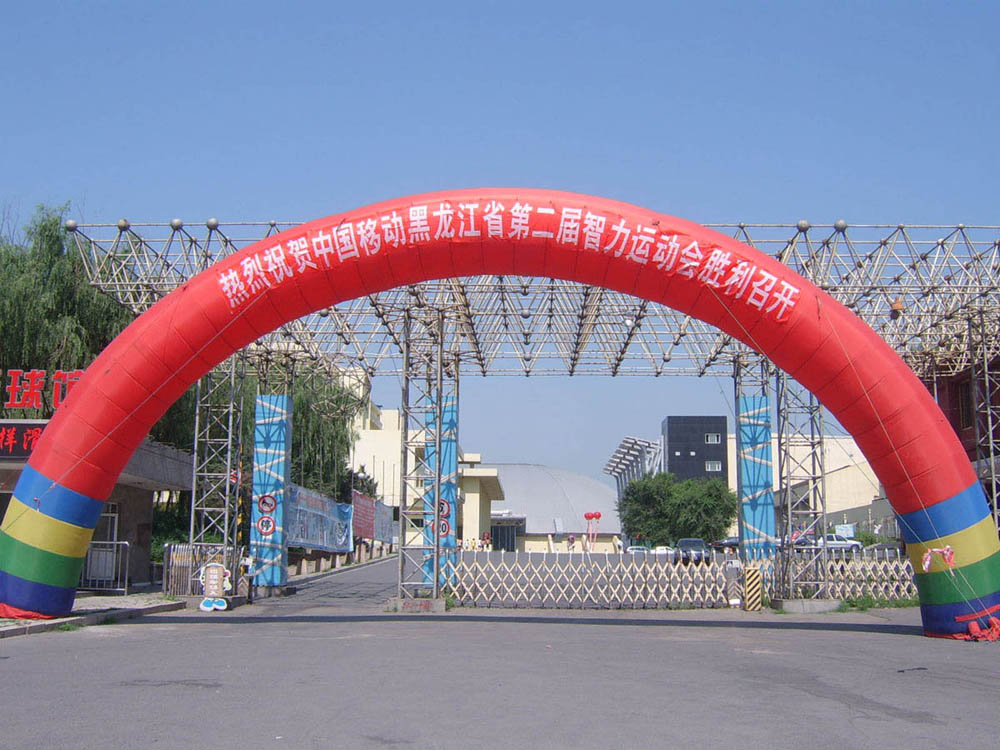
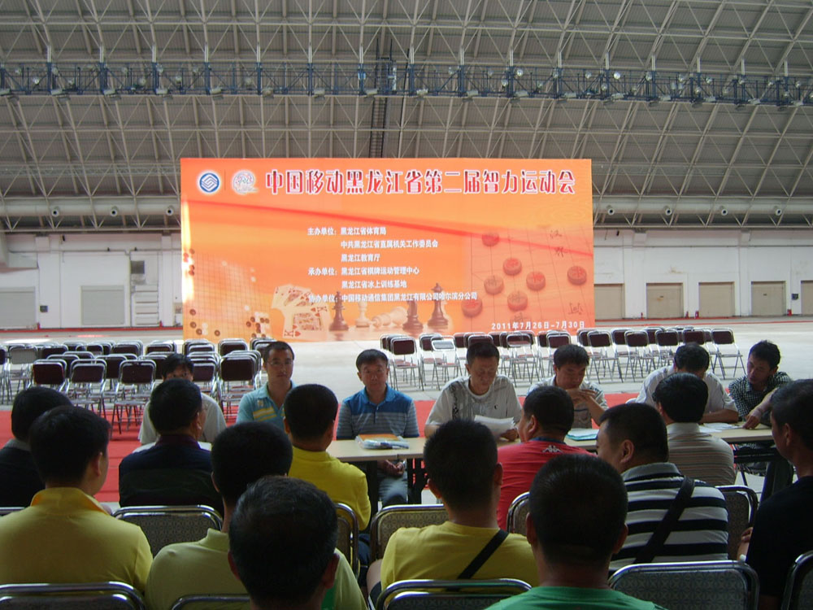

跟踪黑龙江省第二届智力运动会
#1 跟踪黑龙江省第二届智力运动会 作者：以和为贵 发表时间：2011-7-25 17:31:44
七月流火，哪怕是冰城也同样酷暑难耐。冒着骄阳，一路急行来到南通大街128号哈尔滨冰上训练基地，远远望见一道彩虹弯在门口：热烈庆祝中国移动黑龙江省第二届智力运动会胜利召开。[/dl]
上午十点整，由黑龙江省棋院副院长孟昭忠与黑龙江省棋类训练中心业训部部长鲁健共同主持竞赛会议，就智动会相关事宜对运动员进行了详尽的通知。
中国移动黑龙江省第二届智力运动会，将于26日上午9时开幕，赛事历时5天。
本届智运会共设象棋、围棋、国际象棋、五子棋、桥牌5大项20小项，其中另分为市（地）组、行业组，全省来自14个市（地）、49个厅（局）的共448人参加。
为增进与广大棋牌爱好者的交流，赛事将于开幕式期间举行棋牌互动活动。我省著名象棋特级大师、省棋牌中心主任赵国荣将与12名象棋爱好者进行车轮大战。同时还有象棋、围棋、国际象棋、桥牌等项目的挂盘讲解。
象棋裁判长张影富、围棋裁判长陈兆峰、国际象棋裁判长孙祥池、五子棋裁判长张桂宁、桥牌裁判长汤宏桥对运动员参赛名单核对无误后进行了抽签编组，各项目将于明天下午14时整进行第一轮比赛。
［ 白衣神童小剑魔 于 2011-7-25 17:36:50 时花20金币送鲜花一朵］
［ 弱惜 于 2011-7-25 18:41:30 时花20金币送鲜花一朵］
［ 第五象限 于 2011-7-25 19:19:33 时花20金币送鲜花一朵］
［ 自来水 于 2011-7-26 12:43:58 时花20金币送鲜花一朵］
注：应以和为贵要求代为删除乱码
［此帖子已被 被感动的人 在 2011-7-26 13:38:40 编辑过］
［ 被感动的人 于 2011-7-26 13:40:44 时花20金币送鲜花一朵］
［ 失落刀 于 2011-7-27 19:43:58 时奖励此帖[金币加 100 威望加1］
［ 掌棋宣传员 于 2011-7-27 21:07:24 时花20金币送鲜花一朵］
［ 掌棋宣传员 于 2011-7-27 21:07:25 时花20金币送鲜花一朵］
［ 掌棋宣传员 于 2011-7-27 21:07:26 时花20金币送鲜花一朵］
［ 掌棋宣传员 于 2011-7-27 21:07:27 时花20金币送鲜花一朵］
［ 掌棋宣传员 于 2011-7-27 21:07:27 时花20金币送鲜花一朵］
［ 掌棋宣传员 于 2011-7-27 21:07:29 时花20金币送鲜花一朵］
［ 掌棋宣传员 于 2011-7-27 21:07:29 时花20金币送鲜花一朵］
［ 无尽 于 2011-7-28 11:43:17 时花20金币送鲜花一朵］
［ 奇林 于 2011-7-29 10:18:34 时花20金币送鲜花一朵］
［ wuxiao 于 2011-7-29 10:51:56 时花20金币送鲜花一朵］
［ 蓝天蓝 于 2011-7-29 12:15:47 时花20金币送鲜花一朵］
［ 蓝天蓝 于 2011-7-29 12:15:50 时花20金币送鲜花一朵］
#2 Re:跟踪黑龙江省第二届智力运动会 作者：以和为贵 发表时间：2011-7-26 12:16:19
开幕式：


#3 Re:跟踪黑龙江省第二届智力运动会 作者：以和为贵 发表时间：2011-7-26 12:18:23
桥牌互动：

围棋互动：

象棋互动：

我省著名象棋特级大师、省棋牌中心主任赵国荣对弈12名象棋爱好者车轮大战：

#4 Re:跟踪黑龙江省第二届智力运动会 作者：以和为贵 发表时间：2011-7-26 20:16:53
26日下午2点整，各大项目同时开始第一轮比赛。
桥牌赛场：

中象赛场：

国象赛场：

围棋赛场：

连珠赛场：

#5 Re:跟踪黑龙江省第二届智力运动会 作者：以和为贵 发表时间：2011-7-27 19:36:21
主会赛场：

主会赛场：

赛场贺旗：

赛场一角：

赛场一角：

赛场一角：

赛场一角：

宣传广告牌：

宣传广告牌：

#6 Re:跟踪黑龙江省第二届智力运动会 作者：以和为贵 发表时间：2011-7-28 19:42:48
会旗飘扬：

五子棋裁判长：张桂宁（冰连笨笨）

五子棋裁判员：李楠（冰连南南）

赛场瞬间1：

赛场瞬间2：

赛场瞬间3：

赛场瞬间4：

赛场瞬间5：

#7 Re:跟踪黑龙江省第二届智力运动会 作者：奇林 发表时间：2011-7-29 10:18:06
 好多照片
好多照片［ 以和为贵 于 2011-7-29 20:34:28 时花20金币送鲜花一朵］
#8 Re:跟踪黑龙江省第二届智力运动会 作者：奇林 发表时间：2011-7-29 10:19:48
 为大哥越来越像记者了,还能写精彩文章,还能发好多清晰照片
为大哥越来越像记者了,还能写精彩文章,还能发好多清晰照片［ 以和为贵 于 2011-7-29 20:34:44 时花20金币送鲜花一朵］
#9 Re:跟踪黑龙江省第二届智力运动会 作者：屏蔽 发表时间：2011-7-29 10:27:39
求赛场瞬间5の妹子［ 以和为贵 于 2011-7-29 20:34:56 时花20金币送鲜花一朵］
#10 Re:跟踪黑龙江省第二届智力运动会 作者：微微一笑 发表时间：2011-7-29 10:30:41
其实我每次进来都希望能看到第二页。。。顺便：我也想看美女~［ 以和为贵 于 2011-7-29 20:35:05 时花20金币送鲜花一朵］
#11 Re:跟踪黑龙江省第二届智力运动会 作者：以和为贵 发表时间：2011-7-29 20:24:28
回七楼兼八楼：见证帅哥的时刻。回九楼兼十楼：见证美女的时刻。
#12 Re:跟踪黑龙江省第二届智力运动会 作者：以和为贵 发表时间：2011-7-29 20:29:11
五子棋比赛第一轮对阵表：

五子棋比赛第二轮对阵表：

五子棋比赛第三轮对阵表：

五子棋比赛第四轮对阵表：

五子棋比赛第六轮对阵表：

五子棋比赛最终成绩排名：

冰城连珠参赛人员合影：

［ 微微一笑 于 2011-7-29 21:01:14 时花20金币送鲜花一朵］
#13 Re:跟踪黑龙江省第二届智力运动会 作者：微微一笑 发表时间：2011-7-29 20:54:02
我只认识你和象限同学~恭喜恭喜~［ 第五象限 于 2011-7-29 21:09:17 时花20金币送鲜花一朵］
［ 以和为贵 于 2011-7-30 16:07:42 时花20金币送鲜花一朵］
#14 Re:跟踪黑龙江省第二届智力运动会 作者：掌棋宣传员 发表时间：2011-7-30 10:25:37
恭喜以和为贵!!!［ 第五象限 于 2011-7-30 11:55:49 时花20金币送鲜花一朵］
［ 以和为贵 于 2011-7-30 16:08:15 时花20金币送鲜花一朵］
#15 Re:跟踪黑龙江省第二届智力运动会 作者：以和为贵 发表时间：2011-7-30 16:09:35
补十二楼图片：
五子棋比赛第六轮对阵表：

［此帖子已被 以和为贵 在 2011-7-30 16:10:21 编辑过］
#16 Re:跟踪黑龙江省第二届智力运动会 作者：以和为贵 发表时间：2011-7-30 16:13:40
补十二楼冰城连珠参赛人员合影姓名：
左起：丁宁、张宇鹏、王紫轩、黄丹霖、张桂宁、李楠、史玉彤、张荣、房金龙、李志晔。
［此帖子已被 以和为贵 在 2011-7-30 16:31:59 编辑过］
#17 Re:跟踪黑龙江省第二届智力运动会 作者：以和为贵 发表时间：2011-7-30 16:16:04
7月30日上午十点整，黑龙江省第二届智力运动会闭幕式准时开始：

闭幕会场：

由张桂宁（冰城连珠俱乐部前掌门人）宣布五子棋比赛项目最终成绩排名：
第一名：史玉彤，黑龙江国土资源厅代表队
第二名：张宇鹏，黑龙江省巨能杭盖企业管理咨询有限公司代表队
第三名：张文博，哈尔滨工程大学代表队 
由黑龙江省棋院副院长孟昭忠为五子棋比赛项目前三名得主颁奖：

黑龙江省第二届智力运动会五子棋比赛项目冠亚季军合影：

［此帖子已被 以和为贵 在 2011-7-30 16:54:15 编辑过］
#18 Re:跟踪黑龙江省第二届智力运动会 作者：弱惜 发表时间：2011-7-30 16:36:01
恭喜恭喜九月牛，你太有实力了，终于看见丁MM了，怎么没有小须须和小帅帅。［ 以和为贵 于 2011-7-31 8:40:05 时花20金币送鲜花一朵］
#19 Re:Re:跟踪黑龙江省第二届智力运动会 作者：烟雨淋晨尘 发表时间：2011-7-30 16:38:01
和大哥，你鲜花多，也不能这么祸害啊，啥样的回复都送，
［ 以和为贵 于 2011-7-31 8:42:21 时花20金币送鲜花一朵］
#20 Re:Re:跟踪黑龙江省第二届智力运动会 作者：烟雨淋晨尘 发表时间：2011-7-30 16:47:33
引用：和大哥，你鲜花多，也不能这么祸害啊，啥样的回复都送，
原文由 屏蔽 发表于 2011-7-29 10:27:39 :
求赛场瞬间5の妹子［ 以和为贵 于 2011-7-29 20:34:56 时花20金币送鲜花一朵］
［ 以和为贵 于 2011-7-31 8:43:07 时花20金币送鲜花一朵］
［ 以和为贵 于 2011-7-31 8:44:12 时花20金币送鲜花一朵］
［ 以和为贵 于 2011-7-31 8:45:03 时花20金币送鲜花一朵］
#21 Re:跟踪黑龙江省第二届智力运动会 作者：以和为贵 发表时间：2011-7-31 8:48:08
回十八楼：其实我的运气占了比较主要的因素。
回十九兼二十楼：赠人鲜花，手留余香。
#22 Re:跟踪黑龙江省第二届智力运动会 作者：以和为贵 发表时间：2011-7-31 8:53:57
哈尔滨生活报对黑龙江省第二届智力运动会开幕式的报道：


［ 掌棋宣传员 于 2011-7-31 11:02:39 时花20金币送鲜花一朵］